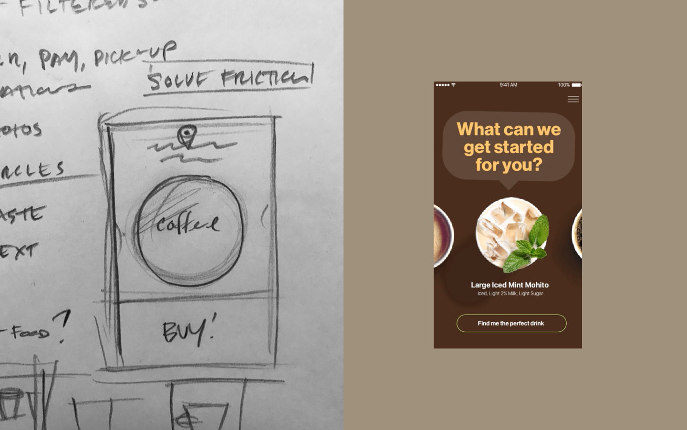

This work was completed during my tenure at Work&Co's Brooklyn office. Partner Joe Stewart lead this work with myself, Corey Edmonson, Chris Nieri and more.
With their cult-like following, their locations on Apple and Facebook¹ campuses, investments by Snoop Dogg², and their lovable founder, Philz Coffee is unlike any beverage operation in America. Their cafés combine a lazy, dorm room aesthetic with fastidious (and time consuming) coffee creations. The result: the longest wait times ever experienced by coffee drinkers.
fig3.1 · Final Prototype of Philz App design designed by myself, Chris Nieri, & Corey Edmonson. Download the Philz App ↗
Philz needed an order ahead app based on their success with third party order ahead systems. We went behind the counter with their president and CMO to understand how their unique experience worked. But it was no secret: extremely personal, passionate baristas focused on their users. These manifested in great coffee, but also great conversation. It was a tall order to try and emulate this via app, but we took our best shot.
fig3.2 · Initial sketches from our flight back to New York from SF (left), and initial design of a longer-flow conversational interface (right).
I did not sleep on the flight back (I'd had a few too many cups of coffee) and focused on sketching the experience offline. I knew that the only thing that would truly connect the user to their future cup of Philz coffee was the overhead POV which had to be expressed in a circle. This would stand in contrast to, say, the Starbucks app whcih features profile shots of coffee with mountains of whipped cream, or stylzed photos of coffee which look like ads. By abstracting the coffee in space it became slightly more personal. In addition, Philz barista have an extremely "high pour" (that is, they often infuse their freshly brewed cups with oxygen by an exagerated "cocktail-like" pour) which resulted in a bubbly cup (even if you taking it black). These bubbles differentiated a fresh cup from one that has sat for a while. Swiping between fresh cups created an ultra-simple interface as well as an emotional connection to the product.
The app was featured in Apple’s Spring 2018 Keynote demonstration. While this was obviously for it’s stunning development and use of iOS features (more so than its design) but still exciting for all of us.
For more about this project please get in touch ↗
2015 · Creative Direction, In-House